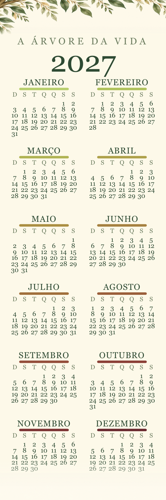
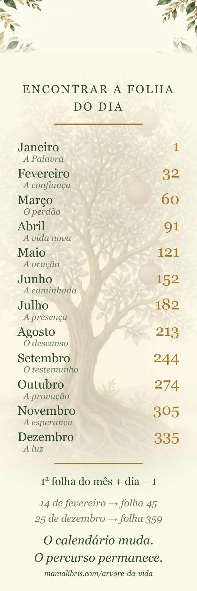

Companheiro de A Árvore da Vida
O livro não tem ano: tem trezentas e sessenta e cinco folhas, e se lê uma por dia, em ordem. O marcador faz a ponte — ele associa cada data à sua folha, e fica dentro do livro no lugar onde você parou.
É gratuito, sem cadastro, e renovado a cada dezembro para o ano seguinte. O livro, esse, não muda.


Calendário na frente, tabela das folhas no verso. Três marcadores por folha A4: guarde um, dê os outros dois.
PDF A4 para imprimir PNG frente PNG verso PDF 1,6 MB, duas páginas · PNG 600 × 1800 px, 300 ppp, para uma gráficaDisponível em dezembro de 2027, neste mesmo endereço.
A regra cabe numa linha, e não muda de um ano para o outro:
1ª folha do mês + dia − 1
O verso do marcador dá a primeira folha de cada um dos doze meses. Assim, 14 de fevereiro leva à folha 45, e 25 de dezembro à folha 359.
O marcador sozinho não serve para nada: os números que ele dá são as folhas de A Árvore da Vida — doze frutos, trezentas e sessenta e cinco folhas, uma porção das Escrituras por dia.
{kind=link}
{kind=link}